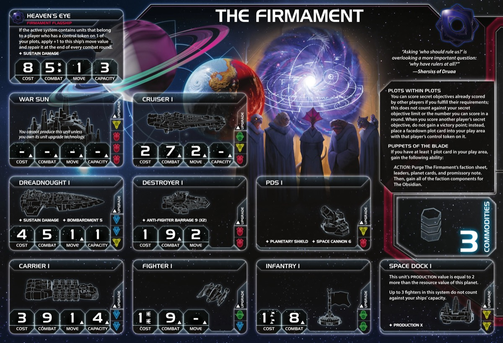

The Firmament / The Obsidian are Twilight Imperium’s dual-faction transformation powerhouse, the only faction that fundamentally changes identity mid-game. You begin as The Firmament, a shadow manipulator that scores other players’ secret objectives without gaining points, instead collecting plot cards that grant powerful abilities against those “puppeted” players. When you choose, you transform into The Obsidian, a military juggernaut whose home planets become hollow (3/0 resource each, totaling 6 resources), all plots flip to revealed status unleashing their effects, and your faction components upgrade to aggressive versions. This faction rewards strategic deception, perfect transformation timing, and understanding both phases of your dual nature. No other faction plays two completely different games in sequence.
Early Game as The Firmament (Rounds 1-3): Your opening focuses on identifying which secret objectives opponents will score and positioning yourself to score them for plot cards instead of points. Use Plots within Plots to score secrets already scored by others—when you do, you gain a facedown plot card with that player’s control token on it rather than victory points. This makes you appear behind on the scoreboard (critical for staying under the radar) while accumulating hidden power. Your starting technology choice (green or yellow with no prerequisites) determines your tech path: Neural Parasite (green) for infantry generation or Sarween Tools (yellow) for economic efficiency. Your commander (Captain Aroz) unlocks with just 1 plot card, allowing you to treat planets in systems with your ships as controlled for scoring purposes—making it easier to score opponent secrets. Trade your Black Ops promissory note to gain a free plot card from a chosen player.
Mid-Game Transformation Decision (Rounds 3-4): This is the critical inflection point. You need at least 1 plot to transform via Puppets of the Blade, but ideally you want 3-4 plots before triggering transformation. Each plot provides unique abilities: Assail (+1 combat vs that player), Enervate (free strategy secondaries from them), Extract (steal their technologies), Seethe (destroy their units), or Siphon (gain trade goods when they gain commodities). Transformation timing is everything: too early and you miss plot opportunities; too late and you can’t leverage Obsidian’s power to score victory points. Consider transformation when: (1) You have 3-4 plots, (2) You’re at 2-4 victory points (far enough behind not to be targeted), (3) Stage II objectives appear that favor military/resources, (4) Opponents have secured enough secrets that future plot opportunities diminish.
Late Game as The Obsidian (Rounds 4-6+): After transformation, your entire faction changes. Your home planets flip to Cronos Hollow and Tallin Hollow (3/0 each = 6 total resources, 0 influence), your plots flip to revealed status activating their abilities simultaneously, and all your dual-sided components upgrade. You become a resource-rich military faction with 6 home resources, superior flagship (3 dice instead of 2), offensive agent (forces mutual ship destruction), and combat-focused commander (Aroz Hollow grants +1 combat in The Fracture). Your Neural Parasite tech (if researched) flips from generating friendly infantry to destroying enemy infantry. Your breakthrough flips from storing trade goods (The Sowing) to generating them from combat victories and doubling them (The Reaping). Victory comes from leveraging your resource advantage to field massive fleets, using plot abilities to dominate specific opponents, and scoring objectives rapidly with your accumulated board presence.
The Firmament Home System:
The Obsidian Home System (After Transformation):
Critical Notes:
Commodities: 3 - Average commodity economy - Neither Firmament nor Obsidian are trade-focused - Siphon plot can supplement income if you puppet a high-commodity faction (Hacan, Winnu)
Optimal Resource/Influence from Home Worlds:
1 Carrier:
1 Cruiser:
1 Destroyer:
3 Fighters:
3 Infantry:
1 Space Dock:
Plots within Plots (The Firmament): You can score secret objectives already scored by other players if you fulfill their requirements; this does not count against your secret objective limit or the number you can score in a round. When you score another player’s secret objective, do not gain a victory point; instead, place a facedown plot card into your play area with that player’s control token on it.
Puppets of the Blade (The Firmament): If you have at least 1 plot card in your play area, gain the following ability: ACTION: Purge The Firmament’s faction sheet, leaders, planet cards, and promissory note. Then, gain all of the faction components for The Obsidian.
Nocturne (The Obsidian): This faction cannot be chosen during setup.
The Blade’s Orchestra (The Obsidian): When this faction comes into play, flip your home system, double-sided faction components, and all of your in-play plot cards. Then, ready Cronos Hollow and Tallin Hollow if you control them.
Marionettes (Both Factions): The player or players whose control tokens are on each plot card are the puppeted players for that plot.
Starting Technologies:
Choose ONE Green or Yellow Technology with No Prerequisites:
This is a critical Round 1 decision that shapes your entire tech path.
Green Technologies:
Yellow Technologies:
Recommended Choices: 1. Sarween Tools (Yellow) - Economic efficiency for infantry spam (helps score ground-based secrets) 2. Hyper Metabolism (Green) - Command token sustainability for aggressive expansion 3. Bio-Stims (Green) - Opens path to Neural Parasite (GG), synergizes with infantry production
Faction Technologies:
(Add faction technology information here if available from the cheat sheet)
Agent: Myru Vos (The Firmament) When a player moves ships: You may exhaust this card; if you do, SPACE CANNON cannot be used against those ships. If they are not transporting units, they can also move through other players’ ships.
Agent: Vos Hollow (The Obsidian) When a player’s ship is destroyed during any combat: You may exhaust this card; if you do, that player’s opponent must destroy 1 of their ships of the same type in the active system.
Commander: Captain Aroz (The Firmament) Unlock: Have a plot card in play. You may treat planets in systems that contain your ships as if you controlled them for the purpose of scoring secret objectives.
Commander: Aroz Hollow (The Obsidian) Unlock: Have units in The Fracture. Apply +1 to the result of each of your units’ combat rolls in The Fracture.
Hero: Sharsiss (The Firmament) Unlock: Have 3 scored objectives. The blade beckons: ACTION: Place 1 of your plot cards in play with any other player’s control token on it. Then, you may place any player’s control token on 1 of your in-play plot cards; one plot cannot have two of the same player’s tokens. Then, purge this card.
Hero: Sharsiss Hollow (The Obsidian) Unlock: Have 3 scored objectives. The blade revealed: ACTION: Ready all of your planets. Then, purge this card.
Black Ops (The Firmament): When you receive this card, if you are not the Firmament: The Firmament player may place 1 facedown plot card in their play area with your control token on it. Then, gain 2 command tokens, gain 2 trade goods, and purge this card.
Malevolency (The Obsidian): At the end of one of your tactical actions: Spend 1 influence to give this card to one of your neighbors; you can use this ability even if you are the Obsidian player. At the end of the status phase, if you are not the Obsidian player, remove 1 command token from your fleet pool and return it to your reinforcements.
Alliance Ability (The Firmament): While you are neighbors with the Firmament player, you gain the following alliance ability: Plots within Plots - You can score secret objectives already scored by other players if you fulfill their requirements; this does not count against your secret objective limit or the number you can score in a round. When you score another player’s secret objective, do not gain a victory point; instead, place a facedown plot card into your play area with that player’s control token on it.
Alliance Ability (The Obsidian): While you are neighbors with the Obsidian player, you gain the following alliance ability: (Typically extends Obsidian benefits, but specific text not detailed in standard references)
Viper Ex-23 (The Firmament): Cost: 2 Combat: 6 Sustain Damage When ground forces are committed to this planet, you may choose for your units to coexist, if they were not already. Flip this card if your faction becomes the Obsidian.
Viper Ex-23 (The Obsidian): Cost: 2 Combat: 6 Sustain Damage If this unit was coexisting when this card flipped to this side, gain control of its planet; the other player’s units are now coexisting.
Heaven’s Eye (The Firmament): Cost: 8 Combat: 5 (x2) Move: 1 Capacity: 3 Sustain Damage If the active system contains units that belong to a player who has a control token on 1 of your plots, apply +1 to this ship’s move value and repair it at the end of every combat round.
Heaven’s Hollow (The Obsidian): Cost: 8 Combat: 5 (x3) Move: 1 Capacity: 3 Sustain Damage
The Sowing (The Firmament - Yellow ↔︎ Green): When you gain this card and at the start of the status phase, you may place up to 3 of your trade goods on this card. Flip this card if you become the Obsidian faction.
The Reaping (The Obsidian - Yellow ↔︎ Green): Place 1 trade good from the supply onto this card each time you win a combat against a puppeted player. At the start of the status phase, gain all trade goods on this card, then gain an equal number of trade goods from the supply.
Critical Priorities:
Ideal Slice Characteristics:
As Firmament/Obsidian, your first turn priorities depend on whether you’re in Firmament phase (Rounds 1-3) or post-transformation Obsidian phase (Rounds 4+).
As The Firmament (Early Game):
Scoring - Your Plots within Plots ability requires scoring OPPONENT secrets without gaining points. Identify which secrets opponents will score (explore-based, territorial, tech-based) and position to score them for plot cards. Commander unlocks with just 1 plot, treating planets in systems with your ships as controlled for secrets.
Expansion + Production - You need board presence to score opponent secrets. Expand to 2-3 systems Round 1. Your starting tech choice (green or yellow) determines your path: Sarween Tools for economic efficiency or Bio-Stims/Hyper Metabolism for sustainability.
Technology - Push toward Neural Parasite (generates friendly infantry as Firmament, destroys enemy infantry as Obsidian) or production techs. However, plot collection comes first—tech supports plot acquisition.
Breakthrough - The Sowing/Reaping (stores trade goods pre-transformation, generates + doubles them post-transformation) is powerful but requires transformation timing. Focus on plot collection first.
As The Obsidian (Post-Transformation):
Priority shifts completely: your 6-resource home system, revealed plots, and aggressive components make you a military powerhouse. Focus on rapid scoring to overcome point deficit from Firmament phase.
1. Victory Point Deficit: Scoring opponent secrets for plots gives you NO victory points. You appear behind on the scoreboard for the entire Firmament phase, creating massive point deficit. If you collect 4 plots (Rounds 1-3), you might be at 0-2 points while leaders are at 4-6 points. You must catch up rapidly after transformation, requiring perfect execution in Obsidian phase.
2. Transformation Timing Pressure: Deciding WHEN to transform is the hardest decision in TI4. Transform too early (Round 2 with 1-2 plots) and you miss plot opportunities and enter Obsidian phase weak. Transform too late (Round 5 with 6 plots) and you can’t score enough points as Obsidian to win. The “Goldilocks window” is typically Round 3-4 with 3-4 plots, but this varies by game state.
3. Dependency on Opponent Secret Draws: Plots within Plots only works if opponents score secrets you can also achieve. If opponents draw secrets incompatible with your board state (military secrets when you’re peaceful, exploration secrets when you’re boxed in), you can’t gain plots. Bad opponent secret luck cripples your faction.
4. Influence Poverty Post-Transformation: Hollow planets give 0 influence. After transformation, you have 0 home influence, making politics nearly impossible. You cannot spend influence for objectives, vote meaningfully in agendas, or compete with influence-rich factions (Xxcha, Hacan, Winnu) unless you expand to influence-heavy planets.
5. Plot Randomization: Plot cards are drawn randomly when you score opponent secrets. You don’t choose which plot you get—it’s random from the 5 plot types (Assail, Enervate, Extract, Seethe, Siphon). Bad plot draws (getting Siphon against a 2-commodity faction, or Enervate against an opponent who never picks valuable strategy cards) waste plot slots.
6. Commander Unlock Divergence: Firmament commander (Captain Aroz) requires plots; Obsidian commander (Aroz Hollow) requires units in The Fracture. These are completely different unlock conditions. You unlock Firmament commander Round 1-2 easily, but Obsidian commander requires researching Planesplitter (YY) and moving units to The Fracture, often not until Round 4-5.
7. Complex Gameplay: Managing dual faction sheets, tracking 5 different plot types, timing transformation, and executing two different strategies in sequence creates extreme cognitive load. This is TI4’s most complicated faction. Mistakes in plot prioritization or transformation timing lose games.
8. Alliance Note Purging: When you transform, your Firmament promissory note (Black Ops) purges. If you haven’t traded it yet, you lose that opportunity. Similarly, all Firmament faction components purge permanently. Any faction-specific advantages (Firmament agent uses, commander benefits) disappear forever.
Choose ONE Green or Yellow Technology with No Prerequisites:
Recommended Choices (in order):
Primary Path (Planesplitter + Neural Parasite):
Round 1: Starting Tech (Sarween Tools or Hyper Metabolism recommended)
Round 2-3: Planesplitter (YY - 2 Yellow Prerequisites) - Requires 2 yellow technologies - Puts The Fracture into play (anomaly system) - When you transform to Obsidian, Planesplitter flips to 0-cost version - Opens path to Obsidian commander (requires units in The Fracture)
Round 3-4: Neural Parasite (GG - 2 Green Prerequisites) - Requires 2 green technologies - Firmament version: At start of status phase, place 1 infantry from reinforcements on planet in home system - Obsidian version (after flip): At start of your turn, destroy 1 opponent infantry in/adjacent to system with your infantry - Firmament version generates infantry for invasions; Obsidian version destroys opponent infantry
Round 4-5: The Sowing/Reaping Breakthrough (Yellow ↔︎ Green) - Requires yellow + green prerequisites - Firmament version stores trade goods - Obsidian version doubles trade goods from combat victories - Game-changing economic engine post-transformation
Alternative Path (Unit Upgrades):
Round 2: Carrier II (2 Blue) OR Dreadnought II (2 Yellow, 1 Blue) - Carrier II: Capacity 8, better for mass invasions - Dreadnought II: Bombardment support for planetary conquest
Round 3: Cruiser II (2 Yellow, 1 Red) OR Destroyer II (2 Red) - Cruiser II: Cost-efficient screening - Destroyer II: Anti-fighter barrage x3
Planesplitter (2 Yellow Prerequisites - Faction Tech): When you gain this card, put The Fracture into play. Flip this card if the Obsidian faction is in play.
(Flipped) Planesplitter (0 Cost - Faction Tech): When you gain this card, put The Fracture into play. Flip this card if the Obsidian faction is in play.
Neural Parasite (2 Green Prerequisites - Faction Tech): At the start of the status phase, you may place 1 infantry from your reinforcements on a planet you control in your home system. Flip this card if the Obsidian faction is in play.
(Flipped) Neural Parasite (0 Cost - Faction Tech): At the start of your turn, destroy 1 of another player’s infantry in or adjacent to a system that contains your infantry. This technology cannot be researched.
The Sowing/Reaping Breakthrough:
Sarween Tools (Yellow): When 1 or more of your units use PRODUCTION, that unit produces 1 additional hit; that hit must be used to produce fighters or infantry.
Hyper Metabolism (Green): During the status phase, gain 3 command tokens instead of 2.
Your R1 priority is scoring opponent secrets and accumulating plots while avoiding your own victory points.
Round 1 Priority Ranking:
Technology - Need Planesplitter (YY) and Neural Parasite (GG). Early tech advantage accelerates plot accumulation.
Politics - Speaker token valuable, action card draw excellent. 3 starting influence makes politics viable.
Construction - Space docks for distributed production, PDS for defense. Supports expansion for secret scoring.
Leadership - Command tokens help aggressive expansion to score secrets. Not top priority but useful.
Warfare - Remove tokens, redistribute fleets. Useful for invasions to score opponent secrets.
Trade - 3 commodities is average. Trade your Black Ops PN this round to gain plot + support.
Diplomacy - Planet readying less valuable early. Not holding Mecatol Round 1 typically.
Imperial - You DON’T WANT victory points as Firmament. Scoring your own secrets gains points but doesn’t help plot accumulation. Avoid.
As The Firmament (Rounds 2-3):
Love:
Like:
Situational:
Transformation Round (Round 3-4): Typically use your action to transform (Puppets of the Blade). May not get strategy card this round.
As The Obsidian (Rounds 4-6+):
Love:
Like:
Early Game Fleet as Firmament (Rounds 1-2):
Mid Game Fleet as Firmament (Rounds 2-3):
Post-Transformation Fleet as Obsidian (Rounds 4-5):
Late Game Fleet as Obsidian (Rounds 5-6+):
Key Principles:
Round 1 (as The Firmament):
Round 2 (as The Firmament):
Round 3 (as The Firmament):
Round 4 (Transformation Round → become The Obsidian):
Round 5 (as The Obsidian):
Round 6+ (as The Obsidian):
Strengths: Firmament/Obsidian excels at tech objectives with strong research focus and flexible tech paths. Plots within Plots ability enables scoring opponent secret objectives, and revealed plots provide additional objective scoring opportunities through asymmetric information.
Weaknesses: Planet control objectives require more effort without natural expansion bonuses. Combat objectives are challenging in Firmament phase without military focus, though Obsidian phase improves combat capability significantly.
Note: Firmament Obsidian’s dual-phase nature makes objective difficulty vary significantly. Ratings below reflect Obsidian phase (post-transformation).
Spendies | Stage I Objective | Status | |————————————————————————-|——–| | Develop Weaponry (Own 2 unit upgrade technologies) | 🟡 | | Diversify Research (Own 2 tech in each of 2 colors) | 🟢 | | Lead from the Front (Spend 3 tokens from tactic/strategy pools) | 🟡 | | Negotiate Trade Routes (Spend 5 trade goods) | 🟡 | | Sway the Council (Spend 8 influence) | 🔴 |
Control | Stage I Objective | Status | |————————————————————————-|——–| | Corner the Market (Control 4 planets with same trait) | 🟢 | | Defend the Homeworld (Control 3 planets in your home system) | N/A | | Demonstrate Your Power (Destroy 4 units during a combat) | N/A | | Establish a Perimeter (Control 5 planets in non-home systems) | N/A | | Expand Borders (Control 6 planets in non-home systems) | 🟢 |
Ships in Systems | Stage I Objective | Status | |————————————————————————-|——–| | Amass Wealth (Spend 3 influence, 3 resources, 3 trade goods) | 🟡 | | Discover Lost Outposts (Control 2 planets with attachments) | 🟡 | | Engineer a Marvel (Have flagship or war sun on board) | 🟡 | | Explore Deep Space (Units in 3 systems without planets) | 🟡 | | Intimidate the Council (Ships in 2 systems adjacent to MR) | 🟡 | | Make History (Units in 2 systems with legendary/MR/anomalies) | 🟡 | | Populate the Outer Rim (Units in 3 edge systems) | 🟡 | | Push Boundaries (Control more planets than each neighbor) | 🟢 | | Raise a Fleet (5+ non-fighter ships in 1 system) | 🟢 |
Tech | Stage I Objective | Status | |————————————————————————-|——–| | Found Research Outposts (Control 3 planets with tech specialties) | 🟡 |
Structure | Stage I Objective | Status | |————————————————————————-|——–| | Build Defenses (Have 4 or more structures) | 🟡 | | Erect a Monument (Spend 8 resources) | 🟢 | | Improve Infrastructure (Structures on 3 planets outside HS) | 🟢 |
Legend: 🟢 Likely | 🟡 Possible | 🔴 Difficult
As Firmament, focus on scoring opponent secrets for plots. As Obsidian, leverage 6-resource home for military dominance.
Combat | Secret Objective | Status | |————————————————————————–|——–| | Become a Martyr (Lose control of planet in home system) | 🟡 | | Betray a Friend (Win combat vs player whose PN you have) | 🟡 | | Brave the Void (Win combat in anomaly) | 🟡 | | Darken the Skies (Win combat in another player’s HS) | 🟡 | | Demonstrate your Power (3+ non-fighter ships after space combat) | 🟢 | | Destroy their Greatest Ship (Destroy war sun/flagship) | 🟡 | | Fight With Precision (AFB destroy last fighter) | 🟡 | | Make an Example (BOMBARDMENT destroy last ground forces) | 🟡 | | Spark a Rebellion (Win combat vs VP leader) | 🟡 | | Turn their Fleets to Dust (SPACE CANNON destroy last ship) | 🟡 |
Ships in Systems | Secret Objective | Status | |————————————————————————–|——–| | Become the Gatekeeper (Ships in alpha and beta wormhole systems) | 🟡 | | Cut Supply Lines (Ships in system with enemy space dock) | 🟢 | | Establish a Perimeter II (Have 4 PDS on board) | 🟡 | | Forge an Alliance (Control 4 cultural planets) | 🟢 | | Occupy the Fringe (9+ ground forces on planet without space dock) | 🟡 | | Seize an Icon (Control legendary planet) | 🟡 | | Threaten Enemies (Ships adjacent to another player’s HS) | 🟢 |
Control | Secret Objective | Status | |————————————————————————–|——–| | Adapt New Strategies (Own 2 faction technologies) | 🟢 | | Control the Region (Ships in 6 systems) | 🟢 | | Defy Space and Time (Units in wormhole nexus) | 🟡 | | Hoard Raw Materials (Control planets with 12+ resources) | 🟢 | | Learn Secrets of the Cosmos (Ships in 3 systems adjacent to anomalies) | 🟡 | | Mechanize the Military (1 mech on each of 4 planets) | 🟡 | | Mine Rare Minerals (Control 4 hazardous planets) | 🟢 | | Stake Your Claim (Control planet in contested system) | 🟡 |
Tech | Secret Objective | Status | |————————————————————————–|——–| | Master the Laws of Physics (Own 4 tech of same color) | 🟢 | | Unveil Flagship (Win space combat with flagship) | 🟡 |
Structure/Units | Secret Objective | Status | |————————————————————————–|——–| | Dictate Policy (3+ laws in play) | 🟡 | | Establish Hegemony (Control planets with 12+ influence) | 🔴 | | Fuel the War Machine (Have 3 space docks) | 🟢 | | Monopolize Production (Control 4 industrial planets) | 🟢 | | Occupy the Seat of the Empire (Control MR with 3+ ships) | 🟢 | | Produce en Masse (Units with PRODUCTION 8+ in single system) | 🟢 |
Other | Secret Objective | Status | |————————————————————————–|——–| | Destroy Heretical Works (Purge 2 relic fragments) | 🟡 | | Drive the Debate (You/your planet elected by agenda) | 🟡 | | Form a Spy Network (Discard 5 action cards) | 🟡 | | Foster Cohesion (Be neighbors with all players) | 🟡 | | Gather a Mighty Fleet (Have 5 dreadnoughts) | 🟡 | | Prove Endurance (Last to pass) | 🟡 | | Strengthen Bonds (Have another player’s PN) | 🟢 |
| Stage II Objective | Status |
|---|---|
| Centralize Galactic Trade (Spend 10 trade goods) | 🟡 |
| Found a Golden Age (Spend 16 resources) | 🟢 |
| Galvanize the People (Spend 6 tokens from tactic/strategy pools) | 🟡 |
| Manipulate Galactic Law (Spend 16 influence) | 🔴 |
| Hold Vast Reserves (Spend 6 influence, 6 resources, 6 trade goods) | 🟡 |
| Command an Armada (Have 8+ non-fighter ships in 1 system) | 🟢 |
| Achieve Supremacy (Flagship/War Sun in another player’s HS or MR) | 🟡 |
| Become a Legend (Units in 4 systems with legendary/MR/anomalies) | 🟡 |
| Conquer the Weak (Control 1 planet in another player’s HS) | 🟡 |
| Rule Distant Lands (Control 2 planets in/adjacent to different players’ HS) | 🟡 |
| Patrol Vast Territories (Units in 5 systems without planets) | 🟡 |
| Control the Borderlands (Units in 5 edge systems not HS) | 🟡 |
| Subdue the Galaxy (Control 11 planets in non-home systems) | 🟢 |
| Unify the Colonies (Control 6 planets with same trait) | 🟡 |
| Reclaim Ancient Monuments (Control 3 planets with attachments) | 🟡 |
| Form Galactic Brain Trust (Control 5 planets with tech specialties) | 🔴 |
| Construct Massive Cities (Have 7+ structures) | 🟡 |
| Protect the Border (Structures on 5 planets outside HS) | 🟢 |
| Master of Sciences (Own 2 techs in each of 4 colors) | 🟢 |
| Revolutionize Warfare (Own 3 unit upgrade technologies) | 🟡 |
Legend: 🟢 Likely | 🟡 Possible | 🔴 Difficult
Firmament gains plots by scoring opponent secrets. Obsidian leverages 6-resource hollow home and revealed plots for rapid scoring.
Your alliance ability grants Plots within Plots (Firmament) or Obsidian benefits to allies. Trade carefully based on which phase you’re in.
High-Value Alliance Partners (as Firmament): 1. Intelligence-Gathering Factions: - Nomad: Can reach distant systems to score diverse secrets - Ghosts of Creuss: Mobility enables scoring varied opponent secrets - Naalu Collective: 0 initiative helps score secrets early
High-Value Alliance Partners (as Obsidian): 1. Aggressive War Factions: - Sardakk N’orr: Benefits from shared military bonuses - L1Z1X Mindnet: Dreadnought synergy - Barony of Letnev: Military alliance
What to Demand in Exchange:
Timing Considerations:
This section highlights action cards that synergize particularly well with your faction’s strengths or mitigate your weaknesses, relics that offer exceptional value for your faction’s strategy and abilities, and agendas to pursue that benefit your position, and agendas to watch out for that could hurt you.
The Firmament / The Obsidian are Twilight Imperium’s most unique and strategically complex faction, demanding mastery of two completely different playstyles in sequence. Your success depends on perfect transformation timing, strategic plot accumulation, and ruthless Obsidian-phase execution.
Key Principles for Success:
Score Opponent Secrets Strategically: Target secrets from players you’ll want to puppet. Assail against military threats, Siphon against high-commodity factions, Extract against tech leaders.
Transform at the Right Moment: Ideal window is Round 3-4 with 3-4 plots. Too early = weak Obsidian; too late = insufficient scoring window.
Leverage Captain Aroz: Firmament commander lets you treat systems with ships as controlled for secrets. Use this to score opponent secrets without actually conquering planets.
Trade Black Ops PN Wisely: Choose which player gets it based on whose secret you can easily score. Gain free plot while giving them resources/command tokens.
Plan Mech Coexistence: Use Firmament mechs to coexist on valuable planets, then transform to STEAL those planets. Devastating surprise tactic.
Maximize Hollow Planet Economy: 6 resources from home post-transformation is massive. Build War Suns, mass dreadnoughts, or rapid expansion fleets immediately.
Stack Plot Abilities: With 3-4 revealed plots, you can have Assail (+1 combat) against one player, Enervate (free secondaries) against another, Extract (tech theft) against a third. Use all simultaneously.
The Reaping Economic Engine: Win combats vs puppeted players → gain trade goods → double them at status phase. Massive economic snowball.
Accept Influence Poverty: Post-transformation, 0 influence is permanent. Expand to influence planets immediately or accept political irrelevance.
Hero Timing: Firmament hero (Sharsiss) gains free plot or reassigns plots. Obsidian hero (Sharsiss Hollow) readies all planets. Use whichever phase’s hero fits your needs.
The Firmament / Obsidian rewards strategic deception, perfect timing, and deep understanding of secret objectives. You play an entirely different game than opponents—accumulating hidden power while appearing weak, then transforming into a juggernaut. Master plot accumulation timing, transformation decision-making, and Obsidian aggression to dominate through this unique dual-faction identity.
The shadow becomes the blade. All will fall before The Obsidian.